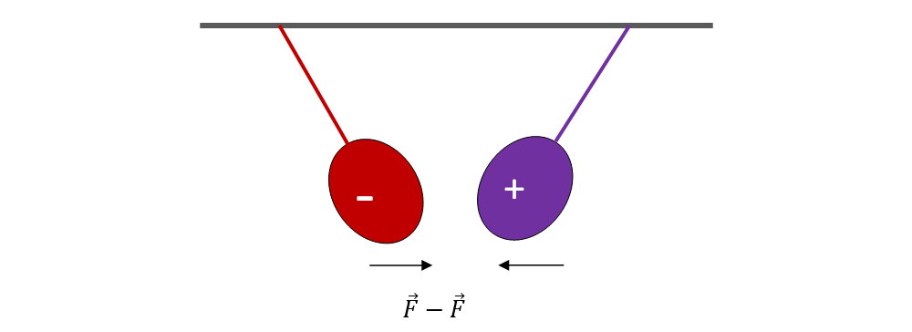
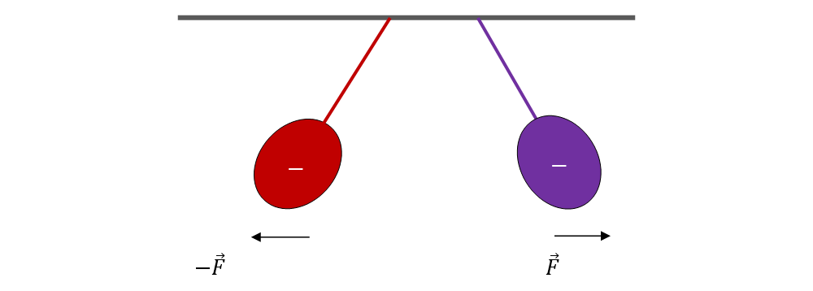
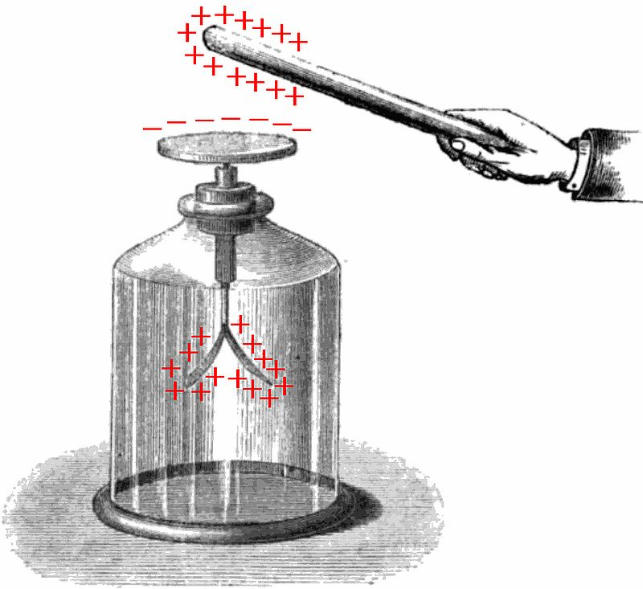

Lecția 4 – Fenomenul de electrizare (experimental). Sarcina electrică
„Fizica nu este o materie dominată de formule, ci de logică"
1. Ce este electrizarea
Electrizarea este procesul prin care un corp capătă proprietăți electrice.
După electrizare, corpul poate atrage bucăți mici de hârtie, poate devia un jet subțire de apă sau poate interacționa cu alte corpuri electrizate.

2. Moduri de electrizare
Electrizarea se poate realiza prin:
- Frecare - frecarea unui material cu altul transferă electronii
- Contact - un corp electrizat transmite sarcina unui corp neutru prin contact direct
- Influență - apropierea unui corp electrizat rearanjează electronii fără contact fizic

- Frecare - cel mai comun mod
- Contact - transfer direct de sarcină
- Influență - rearanjare de electroni fără contact
3. Sarcina electrică
Sarcina electrică este mărimea fizică ce descrie starea de electrizare a unui corp.
Corpurile se pot încărca pozitiv sau negativ.
- Sarcină pozitivă (+) - lipsă de electroni
- Sarcină negativă (-) - exces de electroni
4. Electroscopul
Electroscopul este un dispozitiv simplu folosit pentru a evidenția electrizarea unui corp.
El ne arată dacă un corp este electrizat și ajută la observarea transferului de sarcină electrică.

- Electroscopul are o sfere metalică la vârf și dou�� foi de aur sau alamă în interior
- Când un corp electrizat atinge sfera, sarcina se transmite foilor
- Foile, având aceeași sarcină, se resping și se deschid
- Unghiul de deschidere indică intensitatea sarcinii electrice
5. Experiment: Electrizare prin frecare
Poți realiza un experiment simplu acasă:
- Ia un balon și freacă-l de o vâscoasă de lână sau bumbac
- Apropie balonul electrizat de bucăți mici de hârtie
- Observă cum se atrag bucățile de hârtie de balon
- Apropie balonul de fire de păr și observă cum se ridică
Reține
- Electrizarea este procesul prin care un corp capătă proprietăți electrice
- Electrizarea se poate face prin frecare, contact sau influență
- Sarcina electrică descrie starea de electrizare a unui corp
- Corpurile cu sarcini de același fel se resping, cele cu sarcini opuse se atrag
- Electroscopul evidențiază existența sarcinii electrice
- Electrizarea este datorată transferului electronilor
Navigare
Butonul „Mergi mai departe" te duce direct la lecția următoare.